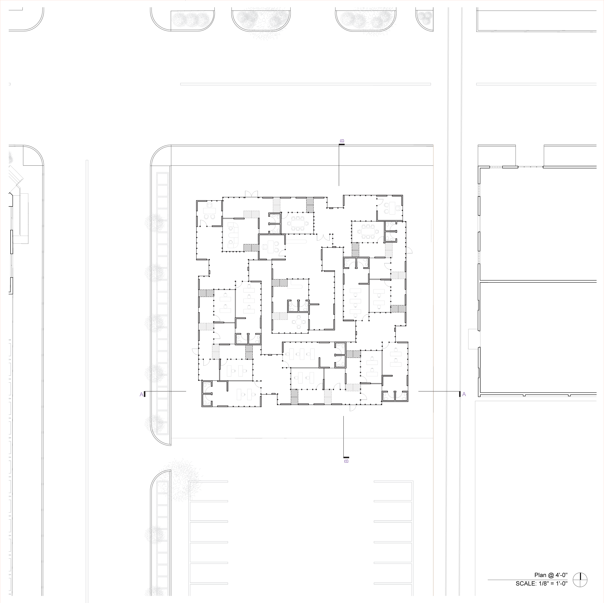

COURSE: Arch-2503
LOCATION: Lubbock, Tx
DATE: Fall 2020
DETAIL OF COURSE
At the beginning of the course, one must find tectonic elements that make up a given building. As a group, we compiled all these tectonic elements to have a variety to choose from to create our repetitive building segments. With a constructed building segment one must find a way to arrange a multitude of these units within the site to accommodate the givin building details.

For my segments, I decided to use tectonic elements from Villa VPRO. I mostly used floors from Villa VPRO to create the floors, walls, and roofs for my segment of a building. The segment plan is created so the in every new room is a couple of inches higher than each other.
I organized a multitude of these buildings segment in a spiral-like circulation. Since each room had different heights, the central segment of the building was at a higher position than the beginning portion. I ended up flipping a couple of the segments to prevent the central portion of the entire site to be higher than the rest. This created a playful circulation where some floors repetitively move up and or down while walking along the path.